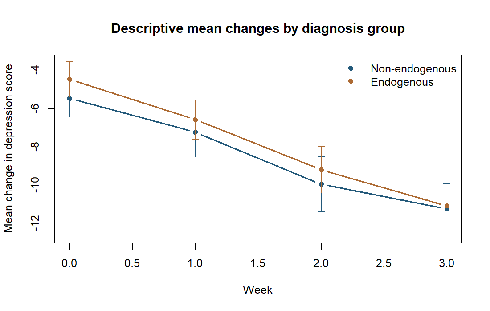

Question
How are changes in depression scores associated with diagnosis and measured drug concentration after accounting for repeated observations?
Findings
For the selected random intercept and slope model, the week × desipramine coefficient was −0.887 (95% CI −1.551 to −0.224; p = 0.009). This coefficient is on the dataset’s recorded concentration scale; it is not a treatment effect or a dosing recommendation.

Methods and revision
Used ML for comparisons across fixed effects and a common fixed-effects formula for REML covariance comparisons. Aligned the final fit and report. Implemented unstructured residual covariance with both correlations and visit-specific variances; avoided duplicating compound symmetry with a random intercept.
Limits
Drug concentrations are observed, time-varying measurements. The model does not establish causation or separate within-person from between-person concentration effects. The sample is small, and reported intervals do not account for model selection.
Run the analysis
Rscript analysis.R data/riesby.csv resultsUse the riesby dataset distributed with multilevelmod. In R: install.packages("multilevelmod"); data("riesby", package="multilevelmod"); dir.create("data", showWarnings=FALSE); write.csv(riesby, "data/riesby.csv", row.names=FALSE). The analysis itself uses nlme. The package describes depr_score as change in depression scores, not a raw symptom score. It is a historical teaching dataset, not data collected by the author.